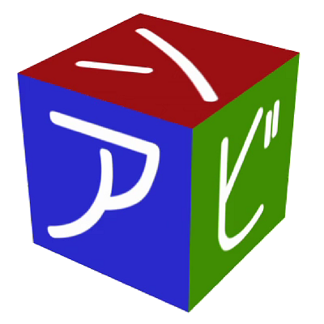

ちょっと便利な遊び支援ツール！
アプリ概要
サイコロに決めてほしいとき、順番を決めたいとき、ビンゴをしたいとき、そんなときに便利なツールを集めました。
対応内容
- ダイス(サイコロ)
- 任意の数～任意の数の範囲内のサイコロを振ることが出来ます。
- デフォルトは１～６です。
- ビンゴとの違いは、結果が重複します。
- 順番決め
- メンバーの名前を入力することで、その順番を適当に決めます。
- 名前を入力することが面倒なときは、こちらで適当に名前を決めちゃいます。
- ビンゴ
- 任意の数～任意の数の範囲内でビンゴの抽選をします。
- デフォルトは１～１００です。
- ダイス(サイコロ)との違いは、結果が重複しません。また、全ての数が出揃うと終了します。(そのまま継続すると結果がリセットされ最初からの実施となります。)
改訂履歴
- Ver 1.0.0 初版
- 初回リリース
プライバシーポリシー・免責事項
プライバシーポリシー・免責事項はこちら